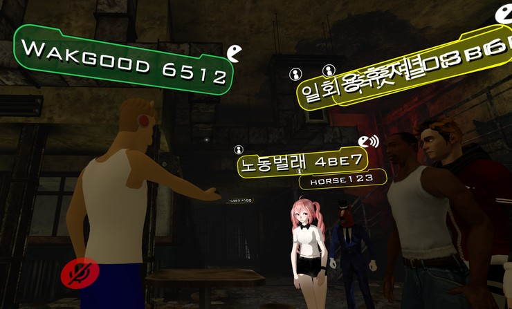

| 메인 페이지로 이동 | PDF로 보기 | |||
메타버스(Metaverse)란 ‘가상’, ‘초월’등을 뜻하는 영어 단어 ‘메타’(Meta)와 우주를 뜻하는 ‘유니버스’(Universe) 의 합성어로, 현실세계와 같은 사회 · 경제 · 문화 활동이 이뤄지는 3차원의 가상세계를 가리킨다.
메타버스는 현실세계와 같은 사회 · 경제 · 문화 활동이 이뤄지는 3차원 가상세계를 일컫는 말로, 1992년 미국 SF작가 닐 스티븐슨의 소설 『스노 크래시』에 처음 등장한 개념이다. 메타버스는 5G 상용화에 따른 정보통신기술 발달과 코로나19 팬데믹에 따른 비대면 추세 가속화로 점차 주목받고 있다. 메타버스는 초기에 가상현실(Virtual Reality) 라는 말로 표현되었으나, 현재는 진보된 개념의 메타버스라는 단어를 주로 사용한다.
많은 사람들이 이용하는 SNS인 유튜브에서도 메타버스를 이용한 컨텐츠가 다양하게 나오면서 메타버스는 점차 대중적으로 사용되고 있다. 메타버스의 대표적인 사례로는 네이버 자회사 제트에서 만든 ‘제페토(ZEPETO)’와 미국의 ‘로블록스’ 또는 ‘VR챗’ 이 있다. 메타버스 시장은 현재 460억 달러에서 2025년 2800억달러까지 성장할 것으로 전망중이다. 이중 ‘제페토’는 증강현실 아바타 앱 서비스인데, 얼굴 인식을 통해 아바타를 만들어 가상의 공간에서 전 세계 이용자들과 소통하고 놀이, 쇼핑, 업무 등의 활동을 즐길 수 있다. 제페토의 인기가 많아지면서 가수나 브랜드를 홍보하기 위해 제페토를 활용하는 기업이 늘어나고 있다. 걸그룹 블랙핑크는 제페토에서 블랙핑크 아바타를 선보였고 버추얼 팬사인회를 진행해 화제가 되었다. 이 행사에는 4,600만 명이 넘는 이용자가 다녀가기도 했다. 또 현대차에서는 제페토에서 차량을 구현해 쏘나타 N 라인을 시승할 수 있게 했다. 아바타를 이용해 영상과 이미지를 제작할 수 있는 제페토의 비디오 및 포토 부스에서 쏘나타를 활용할 수 있게 하여 이용자들이 자동차로 콘텐츠를 생산할 수 있게 하였다. 이는 코로나로 인해 급격히 성장하게 되었다고 할 수 있다. 2020년 3월 순천향대학교는 코로나로 인해 신입생 입학식을 가상 세계에서 열었다. SK텔레콤의 ‘점프VR’ 플랫폼을 통해 마련된 가상공간에서 학생들은 자신만의 아바타를 만들고, 학과 점퍼를 입고 참석했다. 외에 건국대학교 또한 축제를 가상세계에서 열었다. 이외에 메타버스의 정의처럼 경제 활동으로는 구찌에서 직접 상품을 둘러보고 구매할 수 있는 공간을 제작하기도 했다.
이처럼 현재 메타버스는 굉장히 발전되어가고 있고 발전되었다. 이에 우리는 메타버스를 유연하게 받아들이고 다양한 콘텐츠로 이용할 수 있는 사람이 되어야 한다.